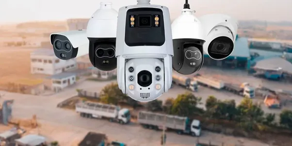
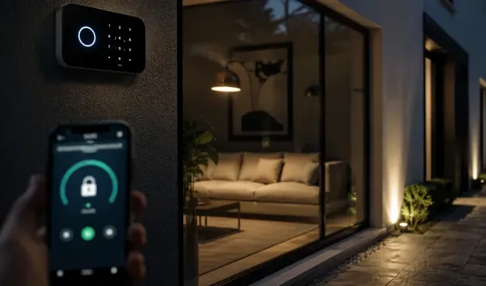
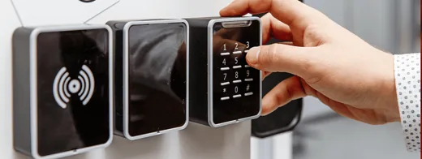
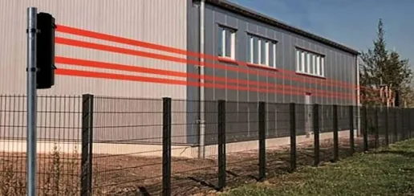
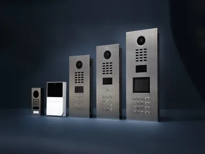
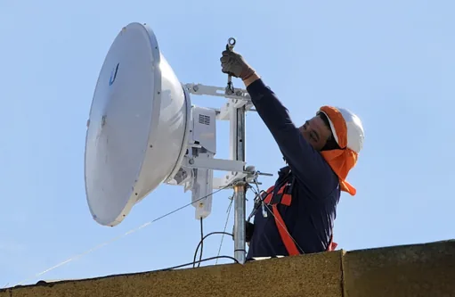
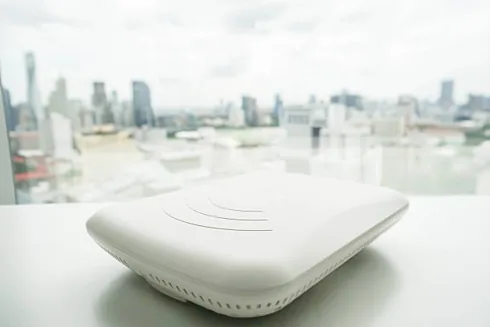
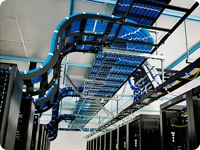

Protección electrónica integral para persona, hogar, empresa o cualquier valor que requiera monitoreo y cuidado.
Soluciones de seguridad CCTV con tecnologías de punta con funciones avanzadas, como: reconocimiento humano, control perimetral, reconocimiento facial, detección térmica para cada tipo de sector. Acceda a sus cámaras desde cualquier lugar del mundo y a cualquier hora.

Implementamos alarmas de seguridad tanto cableados como inalámbricas con control total desde aplicaciones móviles, para sectores residenciales como empresariales.

Controle los accesos a sus instalaciones con autenticaciones mediante biometría, clave o tarjeta de manera centralizada aplicado a personas, vehículos (detección de placas) en distintos entornos de aplicación.

Soluciones de seguridad perimetral convencional y por haz de luz contra intrusiones con control remoto y mediante sus dispositivos móviles.

Emplea los más modernos sistemas de intercomunicadores audio y/o video, con la mejor calidad digital para distintos tipos de escenario, hogar, edificios o condominios empleando los productos de mayor confiabilidad del mercado.

Implementamos soluciones de conectividad inalámbrica de larga distancia para transmisión de voz, data y videos, extendiendo el alcance de su red LAN en áreas de mayor cobertura y alcance, evitando altos costos de interconexión física.

Acelera la velocidad de sus comunicaciones de red inalámbrica local empleando las más avanzadas tecnologías de Access Point, de manera distribuida y sin puntos ciegos, empleando protocolos como WiFi 5, 6 y 7, en topologías mesh con automático cambio de conexión para continuación de la señal. Uso de diversas aplicaciones, como el hogar, edificio, oficinas, hospitales, industria y otros sectores.

Diseñamos e implementamos redes de cómputo empleando los estándares nacionales e internacionales, proveyendo un sólido medio de comunicación duradero, escalable y con altas velocidades de comunicación local, empleando categorías 6, 6A, 7 para conectividad de 1G a 10 Gbps de transmisiones.

Cada empresa es diferente. Cuéntanos tus necesidades y diseñamos una propuesta técnica y comercial adaptada.
Solicitar cotización